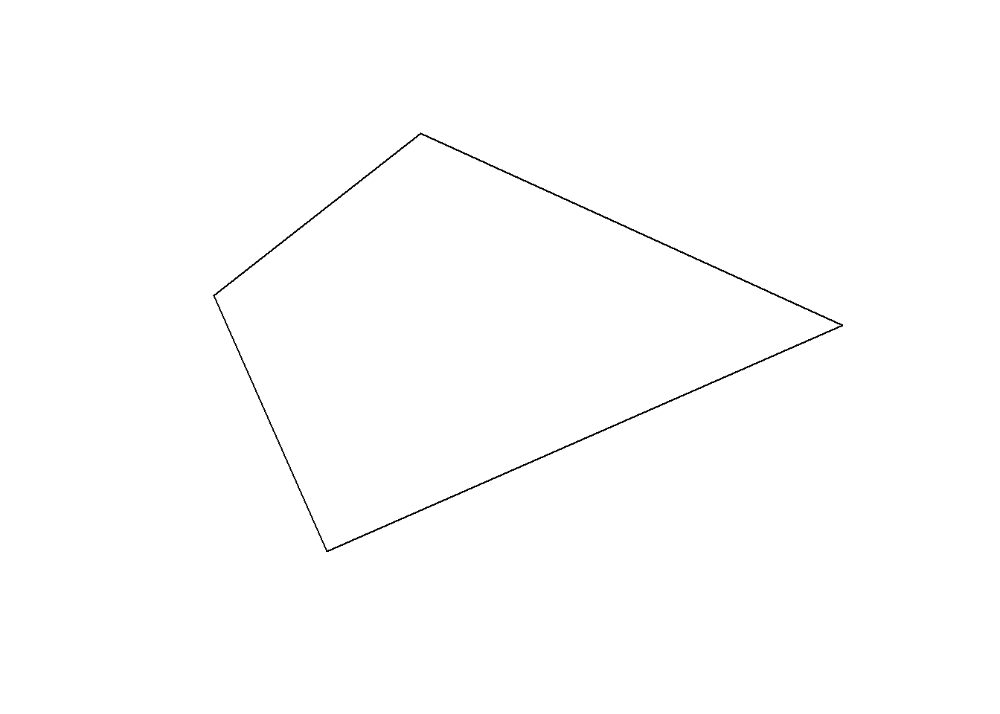
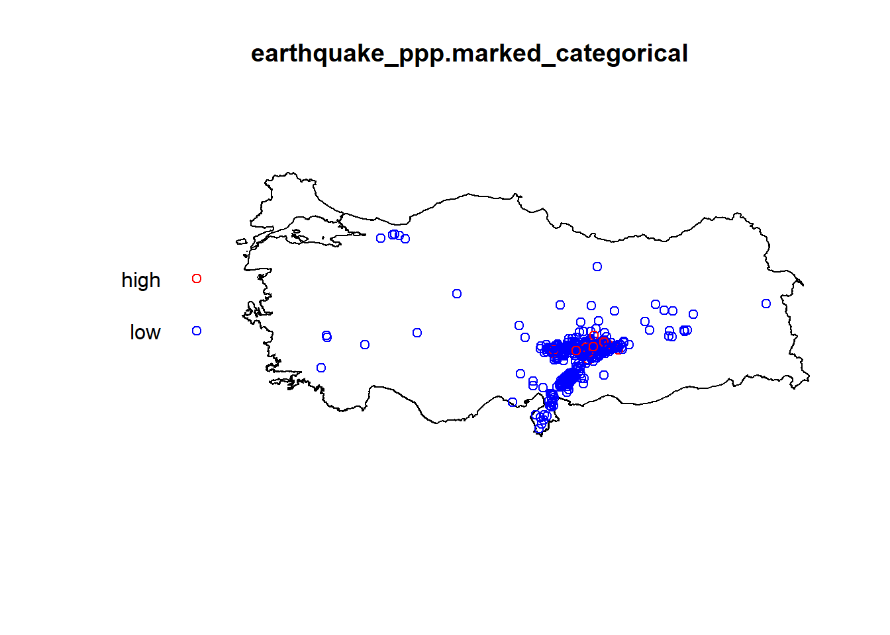
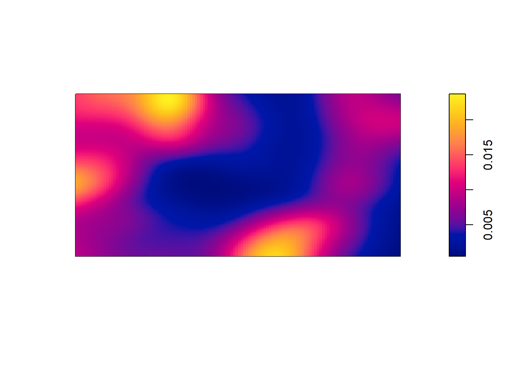

Chapter 2 Spatial Point Pattern Analysis
2.1 Prerequisites
You need to have the following R packages installed and recalled into your library:
suppressPackageStartupMessages({
library(sf)
library(spatstat)
library(spatstat.data)
library(ggplot2)
library(sp)
library(animation)
library(plotrix)
library(tmap)})2.2 Datasets - Readily Available, Imported, Simulated Datasets
2.2.1 Simple Feature Basics
library(sf)sf geometry types:
- point:
st_point() - linestring:
st_linestring() - polygon:
st_polygon() - multipoint:
st_multipoint() - multilinestring:
st_multilinestring() - multipolygon:
st_multipolygon() - collection of different geometry types:
st_geometrycollection()
2.2.1.1 sfg
- A single
pointandmultipoint
# Using the sf library for simple features
# Tarih Saat Enlem(N) Boylam(E) Derinlik(km) MD ML Mw Yer Çözüm Niteliği
# ---------- -------- -------- ------- ---------- ------------ -------------- --------------
# 2023.02.15 14:46:46 36.8803 36.6177 8.3 -.- 2.8 -.- ASAGIBILENLER-ISLAHIYE (GAZIANTEP)
# 2023.02.15 14:43:05 37.0218 28.8915 8.4 -.- 2.7 -.- OTMANLAR-KOYCEGIZ (MUGLA)
# sf::st_crs(4326), which means x and y positions are interpreted as longitude (E) and latitude (N), respectively, in the World Geodetic System 1984 (WGS84)
point1_sg = c(36.6177, 36.8803) %>% st_point() # this will create a "sfg" class Geometry
plot(point1_sg)
class(point1_sg)## [1] "XY" "POINT" "sfg"point2_sg = c(28.8915, 37.0218) %>% st_point()
plot(point2_sg)
class(point2_sg)## [1] "XY" "POINT" "sfg"points_sg = rbind(c(36.6177, 36.8803),c(28.8915, 37.0218)) %>% st_multipoint()
plot(points_sg)class(points_sg)## [1] "XY" "MULTIPOINT" "sfg"st_crs(points_sg)## Coordinate Reference System: NA- A single
polygonand amultipolygon
# polygon
poly1 = list(rbind(c(35.8337398, 37.8864154),
c(36.3281246, 36.7682256),
c(38.5803218, 37.7562395),
c(36.7346187, 38.5939762),
c(35.8337398, 37.8864154)))
poly1_sg = poly1 %>% st_polygon()
poly2 = list(rbind(c(36.7346187, 38.5939762),
c(38.5913081, 39.3456266),
c(38.5803218, 37.7562395),
c(36.7346187, 38.5939762)))
poly2_sg = poly2 %>% st_polygon()
plot(poly1_sg)
plot(poly2_sg)# multipolygon
polygons <- list(poly1, poly2)
polygons_sg <- polygons %>% st_multipolygon()
st_crs(polygons_sg) # we see that the sf geometry has no CRS set up.## Coordinate Reference System: NA2.2.1.2 sfc
- We usually work with multiple simple features and want to combine them. We have a multipolygon and points and want to combine these. We will use
st_sfc()to merge
points_sfc <- st_sfc(point1_sg, point2_sg) # with no CRS
st_crs(points_sfc)## Coordinate Reference System: NApoints_sfc <- st_sfc(point1_sg, point2_sg, crs = 4326) # with appropriate CRS
st_crs(points_sfc)## Coordinate Reference System:
## User input: EPSG:4326
## wkt:
## GEOGCRS["WGS 84",
## DATUM["World Geodetic System 1984",
## ELLIPSOID["WGS 84",6378137,298.257223563,
## LENGTHUNIT["metre",1]]],
## PRIMEM["Greenwich",0,
## ANGLEUNIT["degree",0.0174532925199433]],
## CS[ellipsoidal,2],
## AXIS["geodetic latitude (Lat)",north,
## ORDER[1],
## ANGLEUNIT["degree",0.0174532925199433]],
## AXIS["geodetic longitude (Lon)",east,
## ORDER[2],
## ANGLEUNIT["degree",0.0174532925199433]],
## USAGE[
## SCOPE["Horizontal component of 3D system."],
## AREA["World."],
## BBOX[-90,-180,90,180]],
## ID["EPSG",4326]]multipolygon_sfc <- st_sfc(poly1_sg, poly2_sg, crs = 4326)
st_crs(multipolygon_sfc)## Coordinate Reference System:
## User input: EPSG:4326
## wkt:
## GEOGCRS["WGS 84",
## DATUM["World Geodetic System 1984",
## ELLIPSOID["WGS 84",6378137,298.257223563,
## LENGTHUNIT["metre",1]]],
## PRIMEM["Greenwich",0,
## ANGLEUNIT["degree",0.0174532925199433]],
## CS[ellipsoidal,2],
## AXIS["geodetic latitude (Lat)",north,
## ORDER[1],
## ANGLEUNIT["degree",0.0174532925199433]],
## AXIS["geodetic longitude (Lon)",east,
## ORDER[2],
## ANGLEUNIT["degree",0.0174532925199433]],
## USAGE[
## SCOPE["Horizontal component of 3D system."],
## AREA["World."],
## BBOX[-90,-180,90,180]],
## ID["EPSG",4326]]2.2.1.3 sf
We usually have a data frame that stores the attributes of points, polygons, lines. Remember the earthquake magnitude, time, depth for the points; elevation, population, size for the polygons.
For points
magnitude = c(2.8, 2.7)
depth = c(8.3, 8.4)
time = c(1446, 1443)
earthquake_marks = data.frame(magnitude, depth, time)
earthquake_sf <- earthquake_marks %>% st_sf(geometry = points_sfc) # sf object
plot1 = ggplot() +
geom_sf(data = earthquake_sf["magnitude"], color = "black") +
coord_sf()
plot12.2.2 External files (csv, shp etc)
We will use two layers:
- Location of earthquakes - earthquakes
- Boundaries of Turkey as a polygon - turkeyshp
One of the files is a shp file, the other one is just a simple csv file.
- Location of earthquakes - earthquakes (from a csv)
Read in the dataset as usual
earthquake_csv <- read.csv("C:/Users/01438475/OneDrive - University of Cape Town/ASDA/DataSets/EarthquakesTR.csv")
head(earthquake_csv)## Tarih Saat Lat Long Derinlik_km MD ML Mw
## 1 2023.02.07 13:44:51 38.2452 37.9093 13.9 -.- 3.5 -.-
## 2 2023.02.07 13:41:44 38.1057 36.5072 5.0 -.- 3.9 -.-
## 3 2023.02.07 13:37:24 36.4372 35.6998 13.4 -.- 4.0 -.-
## 4 2023.02.07 13:32:27 37.2445 36.9277 5.4 -.- 2.5 -.-
## 5 2023.02.07 13:30:10 38.1428 37.8203 2.0 -.- 2.9 -.-
## 6 2023.02.07 13:27:30 38.3478 38.1357 6.5 -.- 4.7 -.-
## Yer
## 1 OREN-AKCADAG (MALATYA)
## 2 MAHMUTBEY-GOKSUN (KAHRAMANMARAS)
## 3 ISKENDERUN KORFEZI (AKDENIZ)
## 4 NAIMLER-NURDAGI (GAZIANTEP)
## 5 FINDIKKOY-DOGANSEHIR (MALATYA)
## 6 KUSDOGAN-YESILYURT (MALATYA)earthquake_sf <- earthquake_csv %>%
st_as_sf(coords = c("Long", "Lat"), crs = 4326) %>% # convert to sf file %>%
#Here Long comes first.
st_transform("+proj=utm +zone=37 +datum=WGS84 +units=m +no_defs") # this could be a different CRS
st_crs(earthquake_sf)## Coordinate Reference System:
## User input: +proj=utm +zone=37 +datum=WGS84 +units=m +no_defs
## wkt:
## PROJCRS["unknown",
## BASEGEOGCRS["unknown",
## DATUM["World Geodetic System 1984",
## ELLIPSOID["WGS 84",6378137,298.257223563,
## LENGTHUNIT["metre",1]],
## ID["EPSG",6326]],
## PRIMEM["Greenwich",0,
## ANGLEUNIT["degree",0.0174532925199433],
## ID["EPSG",8901]]],
## CONVERSION["UTM zone 37N",
## METHOD["Transverse Mercator",
## ID["EPSG",9807]],
## PARAMETER["Latitude of natural origin",0,
## ANGLEUNIT["degree",0.0174532925199433],
## ID["EPSG",8801]],
## PARAMETER["Longitude of natural origin",39,
## ANGLEUNIT["degree",0.0174532925199433],
## ID["EPSG",8802]],
## PARAMETER["Scale factor at natural origin",0.9996,
## SCALEUNIT["unity",1],
## ID["EPSG",8805]],
## PARAMETER["False easting",500000,
## LENGTHUNIT["metre",1],
## ID["EPSG",8806]],
## PARAMETER["False northing",0,
## LENGTHUNIT["metre",1],
## ID["EPSG",8807]],
## ID["EPSG",16037]],
## CS[Cartesian,2],
## AXIS["(E)",east,
## ORDER[1],
## LENGTHUNIT["metre",1,
## ID["EPSG",9001]]],
## AXIS["(N)",north,
## ORDER[2],
## LENGTHUNIT["metre",1,
## ID["EPSG",9001]]]]- Boundaries of Turkey as a polygon - turkeyshp
library(sf)
turkeyshp = "C:/Users/01438475/OneDrive - University of Cape Town/ASDA/DataSets/turkey_administrativelevels0_1_2/tur_polbnda_adm0.shp" %>%
st_read() %>%
st_transform("+proj=utm +zone=37 +datum=WGS84 +units=m +no_defs")## Reading layer `tur_polbnda_adm0' from data source
## `C:\Users\01438475\OneDrive - University of Cape Town\ASDA\DataSets\turkey_administrativelevels0_1_2\tur_polbnda_adm0.shp'
## using driver `ESRI Shapefile'
## Simple feature collection with 1 feature and 5 fields
## Geometry type: MULTIPOLYGON
## Dimension: XY
## Bounding box: xmin: 25.66851 ymin: 35.80842 xmax: 44.81793 ymax: 42.10479
## Geodetic CRS: WGS 84Plotting the two together in a simple plot:
plot(st_geometry(turkeyshp))
plot(st_geometry(earthquake_sf), add = TRUE, col = "red")
or using geom_sf() in ggplot:
plot1 = ggplot() +
geom_sf(data = turkeyshp) +
geom_sf(data = earthquake_sf) +
theme_minimal()Here you see that earthquakes outside of Turkey are also plotted. We can subset only the earthquakes that happened in Turkey:
earthquake_sf = earthquake_sf[turkeyshp,]
plot2 = ggplot() +
geom_sf(data = turkeyshp) +
geom_sf(data = earthquake_sf) +
theme_minimal()Visualisations can be done via tmap package as well, and can be saved as png, html files.
tmap_mode("view")## tmap mode set to interactive viewingtmap1 = tm_shape(turkeyshp)+tm_polygons() +tm_shape(earthquake_sf) + tm_dots()
tmap_save(tmap1, filename= "turkeyearthquakes.html")## Interactive map saved to C:\Users\01438475\OneDrive - University of Cape Town\ASDA\bookdown-demo-master\turkeyearthquakes.html2.2.3 Simulated Datasets
2.2.3.0.1 CSR Data Points
set.seed(135)
xy_csr <- matrix(runif(80), ncol=2)
pp_csr <- as.ppp(xy_csr, c(0,1,0,1))
plot(pp_csr)2.2.3.0.2 CSR Data Points with Marks
set.seed(135)
xy_csr <- matrix(runif(2000), ncol=2)
mark_numerical = rexp(1000)
mark_categorical = sample(0:1,size=1000,replace=TRUE)
# plot without marks
pp_csr_m <- as.ppp(xy_csr, c(0,1,0,1))
plot(pp_csr_m)
# plot with marks
xy_csr_withmark = as.data.frame(cbind(xy_csr,mark_numerical, mark_categorical))
# The categorical variable needs to be set as factor with clearly defined levels
xy_csr_withmark$mark_categorical = factor(xy_csr_withmark$mark_categorical, levels = c("0","1"))
# set as point pattern
pp_csr_withmark = with(xy_csr_withmark, ppp(V1,V2,c(0,1),c(0,1),marks=xy_csr_withmark[,4]))
plot(pp_csr_withmark)

2.2.4 Swedishpines Dataset from spatstat.data library
data(swedishpines)
swp = rescale.ppp(swedishpines)
swp## Planar point pattern: 71 points
## window: rectangle = [0, 9.6] x [0, 10] metresclass(swp)## [1] "ppp"summary(swp)## Planar point pattern: 71 points
## Average intensity 0.7395833 points per square metre
##
## Coordinates are given to 1 decimal place
## i.e. rounded to the nearest multiple of 0.1 metres
##
## Window: rectangle = [0, 9.6] x [0, 10] metres
## Window area = 96 square metres
## Unit of length: 1 metreplot(swp)
2.2.5 External datasets - Turkey
Let us go back to Earthquake data that we converted to sf object.
Convert the sf objects to ppp point pattern object using function as.ppp so that we can analyse them in R with spatstat.
# only the geometry
earthquake_ppp = as.ppp(st_geometry(earthquake_sf))
turkeyshp_owin = as.owin(st_geometry(turkeyshp))
plot(earthquake_ppp)plot(turkeyshp_owin)
The observation window and the point pattern can be combined, so that the custom window replaces the default rectangular window:
earthquake_ppp = earthquake_ppp[turkeyshp_owin]
plot(earthquake_ppp)
We might want to incorporate some marks to these points:
# if there are marks that need to be included:
earthquake_ppp.marked_numeric <- ppp(earthquake_ppp$x, earthquake_ppp$y, window = turkeyshp_owin, marks =data.frame(earthquake_sf)$ML)
plot(earthquake_ppp.marked_numeric, use.marks=TRUE)earthquake_ppp.marked_categorical <- ppp(earthquake_ppp$x, earthquake_ppp$y, window = turkeyshp_owin, marks =ifelse(data.frame(earthquake_sf)$ML<5,"low","high"))
plot(earthquake_ppp.marked_categorical, use.marks=TRUE,
cols=c("red","blue","pink"),
markscale=0.1,
pch=21, cex=1)
https://rspatial.org/raster/rosu/Chapter5.html https://geobgu.xyz/r/point-pattern-analysis.html https://www.keene.edu/campus/maps/tool/ https://data.humdata.org/dataset/cod-ab-tur? https://www.jla-data.net/eng/merging-geometry-of-sf-objects-in-r/
2.2.5.0.1 External Datasets - Clinics Dataset SA
Download the data from the following:
https://web1.capetown.gov.za/web1/OpenDataPortal/DatasetDetail?DatasetName=Clinics
library(sf)
RSA_roads = "C:/Users/01438475/OneDrive - University of Cape Town/ASDA/DataSets/zafrds8ff5a/ZAF_roads.shp" %>%
st_read() %>% st_transform(4326)## Reading layer `ZAF_roads' from data source
## `C:\Users\01438475\OneDrive - University of Cape Town\ASDA\DataSets\zafrds8ff5a\ZAF_roads.shp'
## using driver `ESRI Shapefile'
## Simple feature collection with 5559 features and 5 fields
## Geometry type: MULTILINESTRING
## Dimension: XY
## Bounding box: xmin: 16.48784 ymin: -34.82747 xmax: 32.85267 ymax: -22.17693
## Geodetic CRS: WGS 84RSA_biome = "C:/Users/01438475/OneDrive - University of Cape Town/ASDA/DataSets/rsabiome4xkhi/RSA_biome.shp" %>%
st_read() %>% st_transform(4326)## Reading layer `RSA_biome' from data source
## `C:\Users\01438475\OneDrive - University of Cape Town\ASDA\DataSets\rsabiome4xkhi\RSA_biome.shp'
## using driver `ESRI Shapefile'
## Simple feature collection with 3127 features and 1 field
## Geometry type: POLYGON
## Dimension: XY
## Bounding box: xmin: 16.45296 ymin: -34.8336 xmax: 32.8928 ymax: -22.12583
## Geodetic CRS: Hartebeesthoek94clinics_sf = "C:/Users/01438475/OneDrive - University of Cape Town/ASDA/DataSets/Clinics/SL_CLNC.shp" %>%
st_read() %>% st_transform(4326)## Reading layer `SL_CLNC' from data source
## `C:\Users\01438475\OneDrive - University of Cape Town\ASDA\DataSets\Clinics\SL_CLNC.shp'
## using driver `ESRI Shapefile'
## Simple feature collection with 149 features and 5 fields
## Geometry type: POINT
## Dimension: XY
## Bounding box: xmin: 18.34268 ymin: -34.19491 xmax: 18.90847 ymax: -33.51262
## Geodetic CRS: WGS 84ct.wards_sf <- "C:/Users/01438475/OneDrive - University of Cape Town/ASDA/DataSets/sa/CPT/electoral wards for cpt.shp" %>%
st_read(quiet = TRUE) %>%
st_set_crs(4326)
st_crs(ct.wards_sf)## Coordinate Reference System:
## User input: EPSG:4326
## wkt:
## GEOGCRS["WGS 84",
## DATUM["World Geodetic System 1984",
## ELLIPSOID["WGS 84",6378137,298.257223563,
## LENGTHUNIT["metre",1]]],
## PRIMEM["Greenwich",0,
## ANGLEUNIT["degree",0.0174532925199433]],
## CS[ellipsoidal,2],
## AXIS["geodetic latitude (Lat)",north,
## ORDER[1],
## ANGLEUNIT["degree",0.0174532925199433]],
## AXIS["geodetic longitude (Lon)",east,
## ORDER[2],
## ANGLEUNIT["degree",0.0174532925199433]],
## USAGE[
## SCOPE["Horizontal component of 3D system."],
## AREA["World."],
## BBOX[-90,-180,90,180]],
## ID["EPSG",4326]]st_crs(clinics_sf)## Coordinate Reference System:
## User input: EPSG:4326
## wkt:
## GEOGCRS["WGS 84",
## DATUM["World Geodetic System 1984",
## ELLIPSOID["WGS 84",6378137,298.257223563,
## LENGTHUNIT["metre",1]]],
## PRIMEM["Greenwich",0,
## ANGLEUNIT["degree",0.0174532925199433]],
## CS[ellipsoidal,2],
## AXIS["geodetic latitude (Lat)",north,
## ORDER[1],
## ANGLEUNIT["degree",0.0174532925199433]],
## AXIS["geodetic longitude (Lon)",east,
## ORDER[2],
## ANGLEUNIT["degree",0.0174532925199433]],
## USAGE[
## SCOPE["Horizontal component of 3D system."],
## AREA["World."],
## BBOX[-90,-180,90,180]],
## ID["EPSG",4326]]class(clinics_sf)## [1] "sf" "data.frame"summary(clinics_sf)## LCTN ATHY NAME CLASS
## Length:149 Length:149 Length:149 Length:149
## Class :character Class :character Class :character Class :character
## Mode :character Mode :character Mode :character Mode :character
## RGN geometry
## Length:149 POINT :149
## Class :character epsg:4326 : 0
## Mode :character +proj=long...: 02.2.6 Swedishpines Dataset from spatstat.data library
data(swedishpines)
swp = rescale.ppp(swedishpines)
class(swp)## [1] "ppp"summary(swp)## Planar point pattern: 71 points
## Average intensity 0.7395833 points per square metre
##
## Coordinates are given to 1 decimal place
## i.e. rounded to the nearest multiple of 0.1 metres
##
## Window: rectangle = [0, 9.6] x [0, 10] metres
## Window area = 96 square metres
## Unit of length: 1 metreplot(swp)
2.2.7 Clinics Dataset Using Simple Features (SF)
Download the data from the following:
https://web1.capetown.gov.za/web1/OpenDataPortal/DatasetDetail?DatasetName=Clinics
Extract the data frame into R:
library(sf)
clinics_sf = st_read("C:/Users/01438475/OneDrive - University of Cape Town/ASDA/DataSets/Clinics/SL_CLNC.shp")## Reading layer `SL_CLNC' from data source
## `C:\Users\01438475\OneDrive - University of Cape Town\ASDA\DataSets\Clinics\SL_CLNC.shp'
## using driver `ESRI Shapefile'
## Simple feature collection with 149 features and 5 fields
## Geometry type: POINT
## Dimension: XY
## Bounding box: xmin: 18.34268 ymin: -34.19491 xmax: 18.90847 ymax: -33.51262
## Geodetic CRS: WGS 84clinics_sf## Simple feature collection with 149 features and 5 fields
## Geometry type: POINT
## Dimension: XY
## Bounding box: xmin: 18.34268 ymin: -34.19491 xmax: 18.90847 ymax: -33.51262
## Geodetic CRS: WGS 84
## First 10 features:
## LCTN ATHY
## 1 C/O Adam/ Liedeman Street Mamre PAWC
## 2 Cnr Hermes & GrosvenorAve CITY OF CAPE TOWN
## 3 Hassen Kahn Ave Rusthof Strand PAWC
## 4 61 Central Circle, Fish Hoek CITY OF CAPE TOWN
## 5 Simon Street, Nomzamo CITY OF CAPE TOWN
## 6 C/O Musical and Hospital Street Macassar PAWC
## 7 28 Church Street Somerset West CITY OF CAPE TOWN
## 8 Fagan Street Strand CITY OF CAPE TOWN
## 9 Karbonkel Road, CMC Building, Hout Bay PAWC
## 10 Midmar Street Groenvallei CITY OF CAPE TOWN
## NAME CLASS RGN
## 1 MAMRE CDC Community Day Centre Western
## 2 SAXON SEA CLINIC Clinic Western
## 3 GUSTROUW CDC Community Day Centre Eastern
## 4 FISH HOEK CLINIC Clinic Southern
## 5 IKWEZI CDC Community Day Centre Eastern
## 6 MACASSAR CDC Community Day Centre Eastern
## 7 SOMERSET WEST CLINIC Clinic Eastern
## 8 FAGAN STREET SATELLITE Satellite Eastern
## 9 HOUT BAY HARBOUR CDC Community Day Centre Southern
## 10 GROENVALLEI SATELLITE Satellite Tygerberg
## geometry
## 1 POINT (18.47692 -33.51262)
## 2 POINT (18.48881 -33.55012)
## 3 POINT (18.85211 -34.13472)
## 4 POINT (18.42632 -34.13669)
## 5 POINT (18.86622 -34.11375)
## 6 POINT (18.76369 -34.06105)
## 7 POINT (18.84814 -34.08579)
## 8 POINT (18.82979 -34.1162)
## 9 POINT (18.34268 -34.0549)
## 10 POINT (18.66701 -33.89165)class(clinics_sf)## [1] "sf" "data.frame"summary(clinics_sf)## LCTN ATHY NAME CLASS
## Length:149 Length:149 Length:149 Length:149
## Class :character Class :character Class :character Class :character
## Mode :character Mode :character Mode :character Mode :character
## RGN geometry
## Length:149 POINT :149
## Class :character epsg:4326 : 0
## Mode :character +proj=long...: 02.3 Plotting Datasets
2.3.2 Basic ggplot() function - (sf) object
library(ggplot2)
plot1 = ggplot() +
geom_sf(data = clinics_sf, size = .8, color = "black") +
ggtitle("Location of Cape Town clinics - 2016") +
# not specifying crs here, coord_sf will use the CRS defined in the first layer = "+proj=longlat +datum=WGS84 +no_defs"
coord_sf()
plot1
2.3.3 ggplot() function with a bounding box - (sf) object
library(ggplot2)
plot2 = ggplot() +
geom_sf(data = clinics_sf, size = .8, color = "black") +
ggtitle("Location of Cape Town clinics - 2016") +
coord_sf(xlim = c(18.34, 18.91), ylim = c(-34.19, -33.51262)) +
theme(panel.grid.major = element_blank(),
panel.grid.minor = element_blank(),
panel.background = element_rect(colour = "black", size=1, fill=NA))## Warning: The `size` argument of `element_rect()` is deprecated as of ggplot2 3.4.0.
## ℹ Please use the `linewidth` argument instead.plot22.3.4 ggplot() with Electoral Wards Shape File
In order to plot using the electoral wards polygons, we need the sf data frame to be converted into Spatial Points Data Frame (sp).
clinics_sp <- as(clinics_sf, Class = "Spatial")
class(clinics_sp)## [1] "SpatialPointsDataFrame"
## attr(,"package")
## [1] "sp"Download the CPT electoral wards and import the shape file as follows:
library(sf)
ct.wards_sf = st_read("C:/Users/01438475/OneDrive - University of Cape Town/ASDA/DataSets/sa/CPT/electoral wards for cpt.shp")## Reading layer `electoral wards for cpt' from data source
## `C:\Users\01438475\OneDrive - University of Cape Town\ASDA\DataSets\sa\CPT\electoral wards for cpt.shp'
## using driver `ESRI Shapefile'
## Simple feature collection with 111 features and 9 fields
## Geometry type: MULTIPOLYGON
## Dimension: XY
## Bounding box: xmin: 18.30722 ymin: -34.35834 xmax: 19.00467 ymax: -33.47128
## CRS: NAst_geometry_type(ct.wards_sf)## [1] MULTIPOLYGON MULTIPOLYGON MULTIPOLYGON MULTIPOLYGON MULTIPOLYGON
## [6] MULTIPOLYGON MULTIPOLYGON MULTIPOLYGON MULTIPOLYGON MULTIPOLYGON
## [11] MULTIPOLYGON MULTIPOLYGON MULTIPOLYGON MULTIPOLYGON MULTIPOLYGON
## [16] MULTIPOLYGON MULTIPOLYGON MULTIPOLYGON MULTIPOLYGON MULTIPOLYGON
## [21] MULTIPOLYGON MULTIPOLYGON MULTIPOLYGON MULTIPOLYGON MULTIPOLYGON
## [26] MULTIPOLYGON MULTIPOLYGON MULTIPOLYGON MULTIPOLYGON MULTIPOLYGON
## [31] MULTIPOLYGON MULTIPOLYGON MULTIPOLYGON MULTIPOLYGON MULTIPOLYGON
## [36] MULTIPOLYGON MULTIPOLYGON MULTIPOLYGON MULTIPOLYGON MULTIPOLYGON
## [41] MULTIPOLYGON MULTIPOLYGON MULTIPOLYGON MULTIPOLYGON MULTIPOLYGON
## [46] MULTIPOLYGON MULTIPOLYGON MULTIPOLYGON MULTIPOLYGON MULTIPOLYGON
## [51] MULTIPOLYGON MULTIPOLYGON MULTIPOLYGON MULTIPOLYGON MULTIPOLYGON
## [56] MULTIPOLYGON MULTIPOLYGON MULTIPOLYGON MULTIPOLYGON MULTIPOLYGON
## [61] MULTIPOLYGON MULTIPOLYGON MULTIPOLYGON MULTIPOLYGON MULTIPOLYGON
## [66] MULTIPOLYGON MULTIPOLYGON MULTIPOLYGON MULTIPOLYGON MULTIPOLYGON
## [71] MULTIPOLYGON MULTIPOLYGON MULTIPOLYGON MULTIPOLYGON MULTIPOLYGON
## [76] MULTIPOLYGON MULTIPOLYGON MULTIPOLYGON MULTIPOLYGON MULTIPOLYGON
## [81] MULTIPOLYGON MULTIPOLYGON MULTIPOLYGON MULTIPOLYGON MULTIPOLYGON
## [86] MULTIPOLYGON MULTIPOLYGON MULTIPOLYGON MULTIPOLYGON MULTIPOLYGON
## [91] MULTIPOLYGON MULTIPOLYGON MULTIPOLYGON MULTIPOLYGON MULTIPOLYGON
## [96] MULTIPOLYGON MULTIPOLYGON MULTIPOLYGON MULTIPOLYGON MULTIPOLYGON
## [101] MULTIPOLYGON MULTIPOLYGON MULTIPOLYGON MULTIPOLYGON MULTIPOLYGON
## [106] MULTIPOLYGON MULTIPOLYGON MULTIPOLYGON MULTIPOLYGON MULTIPOLYGON
## [111] MULTIPOLYGON
## 18 Levels: GEOMETRY POINT LINESTRING POLYGON MULTIPOINT ... TRIANGLElibrary(ggplot2)
ggplot() +
geom_sf(data = ct.wards_sf, size = .5, color = "black") +
geom_point(aes(x = clinics_sp@coords[,1], y = clinics_sp@coords[,2]),
data = clinics_sp@data, alpha = 1,size=2, color = "red")+
ggtitle("Spatial locations of Cape Town clinics within wards") +
coord_sf()
2.4 Quadrat Analysis - Quadrat Counts and Tests
2.4.1 Turkey Earthquake
q = quadratcount(earthquake_ppp, nx = 7, ny = 7)
plot(q)den = density(earthquake_ppp)
plot(den)2.4.2 swp dataset
Quadrat counts:
Q3x3 = quadratcount(swp, nx=3, ny=3)
plot(swp)
plot(Q3x3, add=TRUE, col="red", cex=1.5, lty=2)
# Plot the density
cl <- interp.colours(c("lightyellow", "orange" ,"red"), 20)
plot( intensity(Q3x3, image=TRUE), las=1, col=cl, main=NULL)
plot(swp, pch=20, cex=0.6, col="black", add=TRUE) # Add points
Quadrat test
Q3x3test = quadrat.test(swp, 3,3)
Q3x3test##
## Chi-squared test of CSR using quadrat counts
##
## data: swp
## X2 = 4.6761, df = 8, p-value = 0.4169
## alternative hypothesis: two.sided
##
## Quadrats: 3 by 3 grid of tiles2.4.3 Simulated CSR Pattern
Q3x3_csr = quadratcount(pp_csr, nx=3, ny=3)
plot(pp_csr)
plot(Q3x3_csr, add=TRUE, col="red", cex=1.5, lty=2)Test:
Q3x3test_csr = quadrat.test(pp_csr, 3,3)## Warning: Some expected counts are small; chi^2 approximation may be inaccurateQ3x3test_csr##
## Chi-squared test of CSR using quadrat counts
##
## data: pp_csr
## X2 = 11.3, df = 8, p-value = 0.3705
## alternative hypothesis: two.sided
##
## Quadrats: 3 by 3 grid of tiles2.4.4 Simulated Cluster Pattern
Q3x3_cluster = quadratcount(pp_cluster, nx=3, ny=3)
plot(pp_cluster)
plot(Q3x3_cluster, add=TRUE, col="red", cex=1.5, lty=2)
Test:
Q3x3test_cluster = quadrat.test(pp_cluster, 3,3)## Warning: Some expected counts are small; chi^2 approximation may be inaccurateQ3x3test_cluster##
## Chi-squared test of CSR using quadrat counts
##
## data: pp_cluster
## X2 = 48.65, df = 8, p-value = 1.484e-07
## alternative hypothesis: two.sided
##
## Quadrats: 3 by 3 grid of tiles2.4.5 Simulated Regular Pattern
Q3x3_regular = quadratcount(pp_regular, nx=4, ny=4)
plot(pp_regular)
plot(Q3x3_regular, add=TRUE, col="red", cex=1.5, lty=2)
Test:
Q3x3test_regular = quadrat.test(pp_regular, 3,3)## Warning: Some expected counts are small; chi^2 approximation may be inaccurateQ3x3test_regular##
## Chi-squared test of CSR using quadrat counts
##
## data: pp_regular
## X2 = 4.55, df = 8, p-value = 0.3912
## alternative hypothesis: two.sided
##
## Quadrats: 3 by 3 grid of tiles2.5 Kernel Density Smoothing
2.5.1 CSR Pattern
den <- density(pp_csr, sigma = .1)
plot(den, main = "CSR")
plot(pp_csr, add=TRUE)
contour(den, add = TRUE)
2.6 Kernel Smoothing with a Covariate
2.6.1 Tropical rain forest trees dataset
data("bei")Assign the elevation covariate to a variable elev by typing
elev <- bei.extra$elevPlot the trees on top of an image of the elevation covariate.
plot(elev, main = "")
plot(bei, add = TRUE, cex = 0.3, pch = 16, cols = "white")For the tropical rainforest data bei, it might be useful to split the study region into several sub-regions according to the terrain elevation:
b <- quantile(elev, probs=(0:4)/4, type=2)
Zcut <- cut(elev, breaks=b, labels=c("Low", "Med-Low", "Med-High", "High"))
textureplot(Zcut, main = "")Convert the image from above to a tesselation, count the number of points in each region using quadratcount, and plot the quadrat counts.
V <- tess(image=Zcut)
qc <- quadratcount(bei, tess = V)
qc## tile
## Low Med-Low Med-High High
## 714 883 1344 663The output shows the number of trees in each region. Since the four regions have equal area, the counts should be approximately equal if there is a uniform density of trees. Obviously they are not equal; there appears to be a strong preference for higher elevations (dropping off for the highest elevations).
Estimate the intensity in each of the four regions.
intensity(qc)## tile
## Low Med-Low Med-High High
## 0.005623154 0.006960978 0.010593103 0.005228707Assume that the intensity of trees is a function ((u) = (e(u))) where (e(u)) is the terrain elevation at location u.
Compute a nonparametric estimate of the function () and plot it by
rh <- rhohat(bei, elev)
plot(rh)
Compute the predicted intensity based on this estimate of ().
predictedrho <- predict(rh)
plot(predictedrho, main = "")
plot(bei, add = TRUE, cols = "white", cex = .2, pch = 16)Compute a non-parametric estimate by kernel smoothing and compare with the predicted intensity above.
The kernel density estimate of the points is computed and plotted with the following code:
kerneldensity <- density(bei, sigma = bw.scott)
plot(kerneldensity, main = "")
plot(kerneldensity, add = TRUE, cols = "white", cex = .2, pch = 16)
Compare the two
pairs(predictedrho, kerneldensity)plot(eval.im(kerneldensity-predictedrho))## Warning: the images 'kerneldensity' and 'predictedrho' were not compatibleWhich seems to be quite different form the predicted intensity.
2.7 Distance Measures and Tests
2.7.1 e2e Distances
2.7.1.1 swp dataset
PD = pairdist(swp)
class(PD)## [1] "matrix" "array"dm <- as.matrix(PD)
dm[1:5, 1:5]## [,1] [,2] [,3] [,4] [,5]
## [1,] 0.000000 2.700000 3.701351 1.503330 5.433231
## [2,] 2.700000 0.000000 1.004988 1.204159 2.765863
## [3,] 3.701351 1.004988 0.000000 2.200000 1.772005
## [4,] 1.503330 1.204159 2.200000 0.000000 3.931921
## [5,] 5.433231 2.765863 1.772005 3.931921 0.000000diag(dm) <- NA
#dm[1:5, 1:5]
wdmin <- apply(dm, 1, which.min)
dmin <- apply(dm, 1, min, na.rm=TRUE)
head(dmin)## [1] 1.5033296 0.8544004 1.0049876 0.9055385 1.0770330 0.8544004# which is the same as nndist e2e=nndist(swp)
dmin = nndist(swp)
plot(swp)
xy = cbind(swp$x, swp$y)
ord <- rev(order(dmin))
far25 <- ord[1:71]
neighbors <- wdmin[far25]
points(xy[far25, ], col='blue', pch=20)
points(xy[neighbors, ], col='red')
# drawing the lines, easiest via a loop
for (i in far25) {
lines(rbind(xy[i, ], xy[wdmin[i], ]), col='red')
}2.7.1.2 Simulated CSR Pattern
e2e_csr = nndist(pp_csr)
e2e_csr## [1] 0.11056220 0.05419105 0.08163249 0.05574520 0.19907565 0.03191166
## [7] 0.10456756 0.15049858 0.16325765 0.02841510 0.05044346 0.05419105
## [13] 0.10456756 0.07525211 0.02471890 0.08651227 0.03700818 0.06471165
## [19] 0.12663659 0.08163249 0.06471165 0.07525211 0.14362670 0.03195288
## [25] 0.09669706 0.03195288 0.09731910 0.04284774 0.11297958 0.03191166
## [31] 0.13454666 0.02841510 0.02471890 0.06711512 0.10924574 0.04269836
## [37] 0.09947882 0.03815278 0.14362670 0.10235020PD = pairdist(pp_csr)
class(PD)## [1] "matrix" "array"dm <- as.matrix(PD)
dm[1:5, 1:5]## [,1] [,2] [,3] [,4] [,5]
## [1,] 0.0000000 0.2930205 0.5163115 0.2844957 0.7955061
## [2,] 0.2930205 0.0000000 0.5975953 0.4633681 0.8993362
## [3,] 0.5163115 0.5975953 0.0000000 0.2546708 0.3017974
## [4,] 0.2844957 0.4633681 0.2546708 0.0000000 0.5130861
## [5,] 0.7955061 0.8993362 0.3017974 0.5130861 0.0000000diag(dm) <- NA
#dm[1:5, 1:5]
wdmin <- apply(dm, 1, which.min)
dmin <- apply(dm, 1, min, na.rm=TRUE)
head(dmin)## [1] 0.11056220 0.05419105 0.08163249 0.05574520 0.19907565 0.03191166# which is the same as nndist e2e=nndist(swp)
dmin = nndist(pp_csr)
plot(pp_csr)
xy = cbind(pp_csr$x, pp_csr$y)
ord <- rev(order(dmin))
far25 <- ord[1:40]
neighbors <- wdmin[far25]
points(xy[far25, ], col='blue', pch=20)
points(xy[neighbors, ], col='red')
# drawing the lines, easiest via a loop
for (i in far25) {
lines(rbind(xy[i, ], xy[wdmin[i], ]), col='red')
}2.7.1.3 Simulated Cluster Pattern
e2e_cluster = nndist(pp_cluster)
e2e_cluster## [1] 0.01854666 0.03502091 0.01854666 0.04969353 0.03502091 0.03390187
## [7] 0.01268286 0.05624330 0.01268286 0.03830134 0.04275255 0.02983313
## [13] 0.04275255 0.02983313 0.03774271 0.03774271 0.03391843 0.01376367
## [19] 0.01376367 0.03500058 0.08344093 0.06403124 0.05422191 0.08344093
## [25] 0.03500058 0.08988091 0.04304986 0.07202173 0.04586212 0.02906394
## [31] 0.08760076 0.11053898 0.04586212 0.02906394 0.05896243 0.07149045
## [37] 0.04361429 0.04361429 0.05745563 0.07483198PD_cluster = pairdist(pp_cluster)
class(PD_cluster)## [1] "matrix" "array"dm_cluster <- as.matrix(PD_cluster)
dm_cluster[1:5, 1:5]## [,1] [,2] [,3] [,4] [,5]
## [1,] 0.00000000 0.09345138 0.01854666 0.04969353 0.07093497
## [2,] 0.09345138 0.00000000 0.08597921 0.13688899 0.03502091
## [3,] 0.01854666 0.08597921 0.00000000 0.05097721 0.05847323
## [4,] 0.04969353 0.13688899 0.05097721 0.00000000 0.10757315
## [5,] 0.07093497 0.03502091 0.05847323 0.10757315 0.00000000diag(dm_cluster) <- NA
wdmin_cluster <- apply(dm_cluster, 1, which.min)
dmin_cluster <- apply(dm_cluster, 1, min, na.rm=TRUE)
head(dmin-cluster)## X Y
## 1 0.080388175 -0.4397788
## 2 0.018557146 -0.5894417
## 3 0.034750612 -0.4767600
## 4 -0.001070259 -0.4526473
## 5 0.141971489 -0.4168896
## 6 -0.048015500 -0.5340536# which is the same as nndist e2e=nndist(swp)
dmin_cluster = nndist(pp_cluster)
plot(pp_cluster)
xy_cluster = cbind(pp_cluster$x, pp_cluster$y)
ord <- rev(order(dmin_cluster))
far25 <- ord[1:40]
neighbors <- wdmin_cluster[far25]
points(xy_cluster[far25, ], col='blue', pch=20)
points(xy_cluster[neighbors, ], col='red')
# drawing the lines, easiest via a loop
for (i in far25) {
lines(rbind(xy_cluster[i, ], xy_cluster[wdmin_cluster[i], ]), col='red')
}
2.7.1.4 Simulated Regular Pattern
e2e_regular = nndist(pp_regular)
e2e_regular## [1] 0.1111111 0.1111111 0.1111111 0.1111111 0.1111111 0.1111111 0.1111111
## [8] 0.1111111 0.1111111 0.1111111 0.1111111 0.1111111 0.1111111 0.1111111
## [15] 0.1111111 0.1111111 0.1111111 0.1111111 0.1111111 0.1111111 0.1111111
## [22] 0.1111111 0.1111111 0.1111111 0.1111111 0.1111111 0.1111111 0.1111111
## [29] 0.1111111 0.1111111 0.1111111 0.1111111 0.1111111 0.1111111 0.1111111
## [36] 0.1111111 0.1111111 0.1111111 0.1111111 0.1111111PD_regular = pairdist(pp_regular)
class(PD_regular)## [1] "matrix" "array"dm_regular <- as.matrix(PD_regular)
dm_regular[1:5, 1:5]## [,1] [,2] [,3] [,4] [,5]
## [1,] 0.0000000 0.1666667 0.3333333 0.5000000 0.6666667
## [2,] 0.1666667 0.0000000 0.1666667 0.3333333 0.5000000
## [3,] 0.3333333 0.1666667 0.0000000 0.1666667 0.3333333
## [4,] 0.5000000 0.3333333 0.1666667 0.0000000 0.1666667
## [5,] 0.6666667 0.5000000 0.3333333 0.1666667 0.0000000diag(dm_regular) <- NA
wdmin_regular <- apply(dm_regular, 1, which.min)
dmin_regular <- apply(dm_regular, 1, min, na.rm=TRUE)
head(dmin-regular)## X Y
## 1 -0.05610447 -0.0005489143
## 2 -0.27914228 -0.0569200607
## 3 -0.41836751 -0.0294786165
## 4 -0.61092147 -0.0553659112
## 5 -0.63425768 0.0879645408
## 6 -0.13475501 -0.1903105666# which is the same as nndist e2e=nndist(swp)
dmin_regular = nndist(pp_regular)
plot(pp_regular)
xy_regular = cbind(pp_regular$x, pp_regular$y)
ord <- rev(order(dmin_regular))
far25 <- ord[1:40]
neighbors <- wdmin_regular[far25]
points(xy_regular[far25, ], col='blue', pch=20)
points(xy_regular[neighbors, ], col='red')
# drawing the lines, easiest via a loop
for (i in far25) {
lines(rbind(xy_regular[i, ], xy_regular[wdmin_regular[i], ]), col='red')
}
2.7.2 p2e Distances
Generate Random points
set.seed(23)
randompoints = matrix(runif(60),ncol=2)
#randompoints = matrix(runif(250),ncol=2)2.7.2.1 CSR Pattern
plot(pp_csr)
points(randompoints, col = "blue", pch=3)
p2e_distances_csr = NULL
mins_csr = NULL
xy = cbind(pp_csr$x, pp_csr$y)
# sqrt((xy[2,1]-randompoints[1,1])^2+(xy[2,2]-randompoints[1,2])^2)
# sqrt((xy[1,1]-randompoints[2,1])^2+(xy[1,2]-randompoints[2,2])^2)
for(i in 1:dim(randompoints)[1]){
dist1 = matrix(pairdist(rbind(randompoints[i,],xy)),41)
p2e_distances_csr = c(p2e_distances_csr,min(dist1[2:41,1]))
mins_csr = c(mins_csr,which.min(dist1[2:41,1]))
}
plot(pp_csr)
ord <- rev(order(p2e_distances_csr))
far25 <- 1:dim(randompoints)[1]
neighbors <- mins_csr
points(randompoints, col='red', pch=4)
points(xy[mins_csr, ], col='blue', pch=20)
# drawing the lines, easiest via a loop
for (i in far25) {
lines(rbind(xy[mins_csr[i], ], randompoints[i, ]), col='red')
}
2.7.2.2 Cluster Pattern
plot(pp_cluster)
points(randompoints, col = "blue", pch=3)p2e_distances_cluster = NULL
mins_cluster = NULL
xy_cluster = cbind(pp_cluster$x, pp_cluster$y)
for(i in 1:dim(randompoints)[1]){
dist1 = matrix(pairdist(rbind(randompoints[i,],xy_cluster)),41)
p2e_distances_cluster = c(p2e_distances_cluster,min(dist1[2:41,1]))
mins_cluster = c(mins_cluster,which.min(dist1[2:41,1]))
}
plot(pp_cluster)
ord <- rev(order(p2e_distances_cluster))
far25 <- 1:dim(randompoints)[1]
neighbors <- mins_cluster
points(randompoints, col='red', pch=4)
points(xy_cluster[mins_cluster, ], col='blue', pch=20)
# drawing the lines, easiest via a loop
for (i in far25) {
lines(rbind(xy_cluster[mins_cluster[i], ], randompoints[i, ]), col='red')
}2.7.2.3 Regular Pattern
p2e_distances_regular = NULL
p2e_mins_regular = NULL
xy_regular = cbind(pp_regular$x, pp_regular$y)
for(i in 1:dim(randompoints)[1]){
dist1 = matrix(pairdist(rbind(randompoints[i,],xy_regular)),41)
p2e_distances_regular = c(p2e_distances_regular,min(dist1[2:41,1]))
p2e_mins_regular = c(p2e_mins_regular,which.min(dist1[2:41,1]))
}
plot(pp_regular)
ord <- rev(order(p2e_distances_regular))
far25 <- 1:dim(randompoints)[1]
neighbors <- p2e_mins_regular
points(randompoints, col='red', pch=4)
points(xy_regular[p2e_mins_regular, ], col='blue', pch=20)
# drawing the lines, easiest via a loop
for (i in far25) {
lines(rbind(xy_regular[p2e_mins_regular[i], ], randompoints[i, ]), col='red')
}2.7.3 Clark and Evans Index and Test
2.7.3.1 CSR Pattern
clarkevans(pp_csr)## naive Donnelly cdf
## 1.0135515 0.9443703 0.9719128clarkevans.test(pp_csr)##
## Clark-Evans test
## No edge correction
## Z-test
##
## data: pp_csr
## R = 1.0136, p-value = 0.8698
## alternative hypothesis: two-sided


2.10 Ripley’s K Function
2.10.1 Simulated CSR Pattern
K <- Kest(pp_csr)
plot(K, main=NULL, las=1, legendargs=list(cex=0.8, xpd=TRUE, inset=c(1.01, 0) ))## Warning in min(D[scaledlegbox]): no non-missing arguments to min; returning Inf